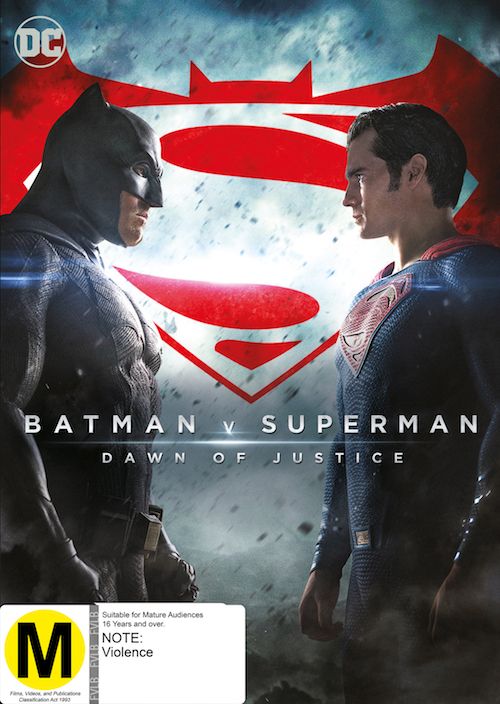
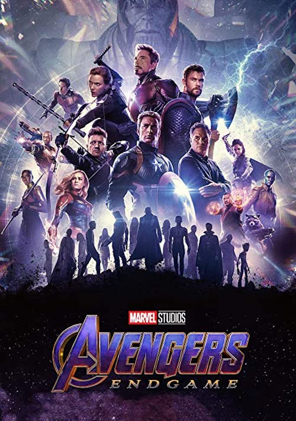
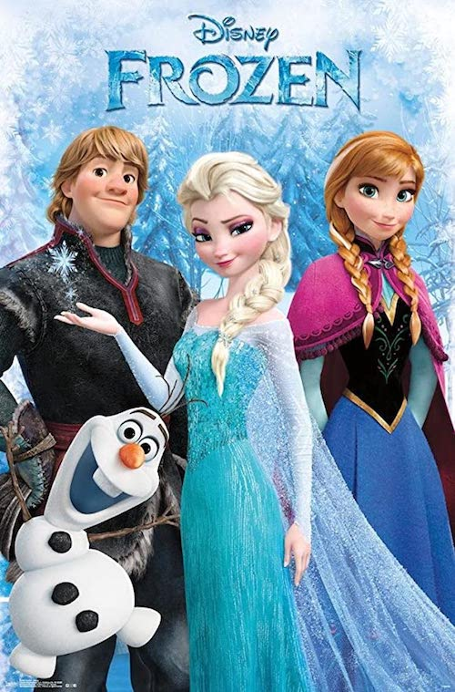
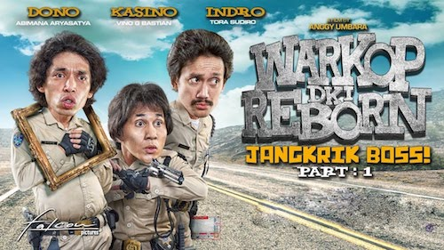
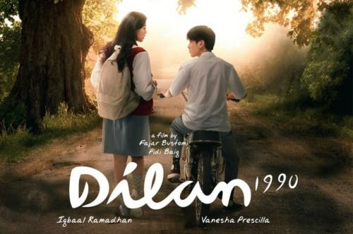
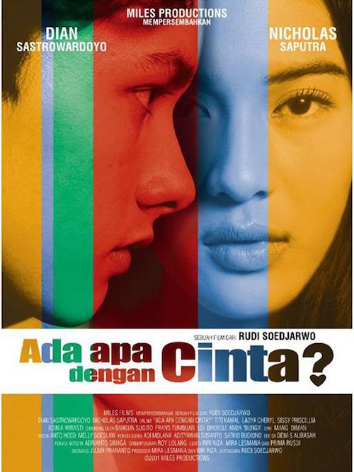
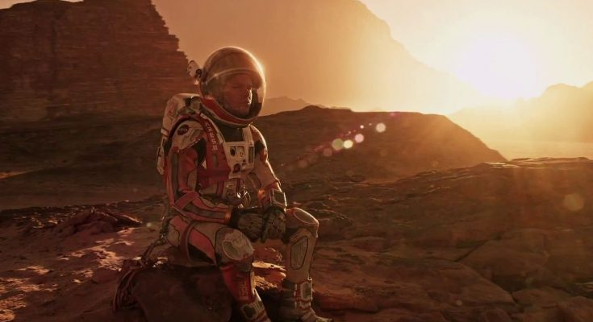

Laskar Pelangi merupakan film hasil kolaborasi antara sutradara Riri Riza, penulis skenario Salman Aristo, dan produser Mira Lesmana.
Kembali ke tahun 1970, desa Gantong, Pulau Belitung, terdapat sebuah gedung sekolah SD dengan kondisi yang sangat memprihatinkan. Sekolah ini bernama SD Muhammadiyah Gantong dan menjadi satu-satunya tempat bersekolah anak-anak miskin di desa tersebut. SD ini juga terancam ditutup oleh dinas pendidikan setempat karena kekurangan murid.
Pemerintah mensyaratkan minimal ada 10 siswa yang bersekolah namun kini hanya ada sembilan siswa yang mendaftar di SD tersebut. Bapak Harfan selaku kepala sekolah hampir menyerah tapi Bu Muslimah tetap percaya akan ada satu lagi siswa yang mendaftar. Nasib sekolah terselamatkan dengan hadirnya Harun, siswa keterbelakangan mental dan Lintang, siswa miskin tapi jenius.
Saat ada lomba karnaval, SD Muhammadiyah hampir tidak bisa ikut serta karena tidak ada dana membuat kostum, namun berkat bakat seni yang dimiliki Mahar, mereka akhirnya memanfaatkan dedaunan yang disulap menjadi kostum dan berhasil memenangkan perlombaaan.
Prestasi anak-anak Laskar pelangi tak sampai di situ. Ketiga siswa paling pintar yaitu Lintang, Ikal, dan Sahara berhasil dalam lomba cerdas cermat. Bu Muslimah membuktikan bahwa meski dengan keterbatasan, dia mampu mendidik anak-anak miskin ini menjadi siswa yang berprestasi.
Sejak saat itu, Bu Muslimah dengan keikhlasan hati mendidik ke 11 muridnya dengan segala keterbatasan dan menamai mereka dengan julukan anak-anak Laskar Pelangi.
Dalam sejarah selalu ada catatan rekor angka jumlah penonton yang berbuah penghargaan entah itu Museum Rekor Indonesia maupun Guiness World Record. Kategori rekor jumlah penonton terbanyak yang pernah dicatat adalah:
Internasional
Saat ancaman baru terhadap galaksi meningkat, Rey, seorang pemulung gurun pasir, dan Finn, mantan stormtrooper, harus bergabung dengan Han Solo dan Chewbacca untuk mencari satu-satunya harapan untuk memulihkan perdamaian.

Khawatir akan tindakan Superman dibiarkan tidak terkendali, Batman menjadi Man of Steel, sementara dunia berjibaku dengan pahlawan seperti apa yang sebenarnya dibutuhkan oleh bumi.

Setelah peristiwa Infinity War yang menghanguskan separuh alam semesta, para Avengers yang tersisa "assemble" sekali lagi untuk mengembalikan tindakan Thanos dan memulihkan keseimbangan alam semesta.

Ketika Ratu Elsa yang baru dinobatkan secara tidak sengaja menggunakan kekuatannya untuk mengubah benda-benda menjadi es untuk mengutuk rumahnya menjadi musim dingin yang tak terbatas, saudara perempuannya Anna bekerja sama dengan seorang pria gunung, rusa yang lucu, dan manusia salju untuk mengubah kondisi cuaca.
Indonesia

Dono, Kasino, dan Indro adalah tiga orang sahabat yang bekerja sebagai petugas keamanaan di organisasi CHIIPS (Cara Hebat Ikut Ikutan Pelayanan Sosial) dimana tugas mereka adalah membantu menertibkan dan menjaga keamanan masyarakat. Namun, tingkah mereka yang konyol dan bermasalah selalu membuat jengkel dan marah atasan mereka.

Pada September 1990, Milea dan keluarganya pindah dari Jakarta ke Bandung. Saat hendak masuk di sebuah SMA, Milea bertemu dengan Dilan sang panglima geng motor. Dilan tak memperkenalkan dirinya, namun dengan sangat percaya diri segera meramal kalau Milea akan naik motor bersamanya dan menjadi pacarnya.
Ini adalah kisah tentang menemukan jodoh. Sebuah cerita tentang menemukan cinta pertama dan cinta terakhir seseorang. Sebuah cerita tentang presiden ketiga Indonesia dan istrinya. Sebuah cerita tentang Habibie dan Ainun.

Cinta sebagai seorang gadis yang cantik, pintar, periang dan langganan juara puisi di sekolahnya harus kalah dengan puisi Rangga, laki-laki pendiam dan dingin yang membuatnya jatuh hati. Di tengah masalah sahabatnya, Cinta dilanda dilema antara persahabatan dan cintanya dengan Rangga yang harus pergi satu bulan purnama.
List Tontonan

Next On
The Martian: upaya survival di tengah abu-abunya kehidupan di planet masa depan
Film The Martian, yang kisahnya diangkat dari novel laris karya Andy Weir ini, Ridley Scott sang sutradara mengajak audiens untuk ikut menikmati momen kesendirian yang dialami sang tokoh utama, Mark Watney lewat monolog-monolog yang memancing tawa dan menyaksikan bagaimana proses adaptasi tokoh tersebut dalam mengatasi problematika yang harus ia alami. Sementara, di lain sisi, instansi pemerintah yang menginisiasi ekspedisi itu berusaha mencari cara untuk memulangkannya.
The Social Network: Mengungkap sisi gelap sang jenius
Hanya butuh enam tahun, jejaring sosial Facebook sudah meraup 500 juta pengguna. Hal ini membuat pendirinya, Mark Zuckerberg menjadi miliarder termuda dalam sejarah. Seorang mahasiswa Harvard dan jenius soal pemograman komputer, Mark mengerjakan sesuatu yang baru, merevolusi jaringan sosial global dan komunikasi. Meski demikian, kesuksesan yang diraihnya pun mengarah pada komplikasi pribadi dan juga hukum.